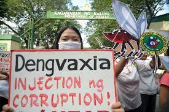
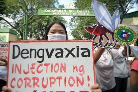

Vaccine hesitancy has been around for a long time in the Philippines but the event that made it turn into what it is today can be accounted to the Dengvaxia vaccine during 2016. The controversy surrounding this vaccine started one year after the anti-dengue immunization program was initiated in 2016 by former President Benigno Aquino III. The company that created Dengvaxia found out that it increased the chances of getting dengue for seronegative patients. This finding connected the Dengvaxia several deaths in the Philippines. This made people wary of the government due to some thinking it was a ploy to weaponize Dengvaxia. This lowered the faith of the Filipino citizens in vaccinations and in the government. It also showed that back in 2015 93% of Filipinos had faith in the vaccine, unfortunately this stooped down to a mere 32% in 2018. Pre-covid the Filipino citizens were already ary of vaccines. This was the main event that led to the vaccine hesitancy that is happening in the present.